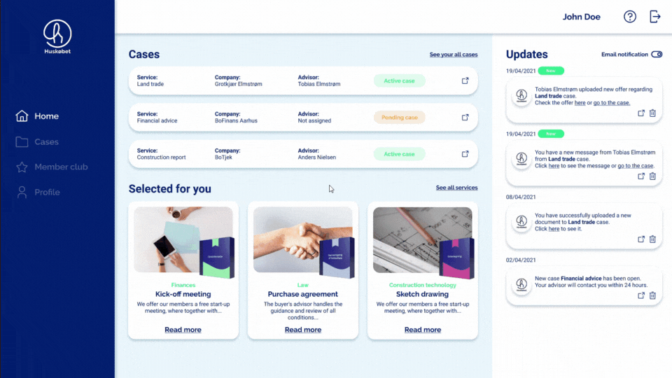
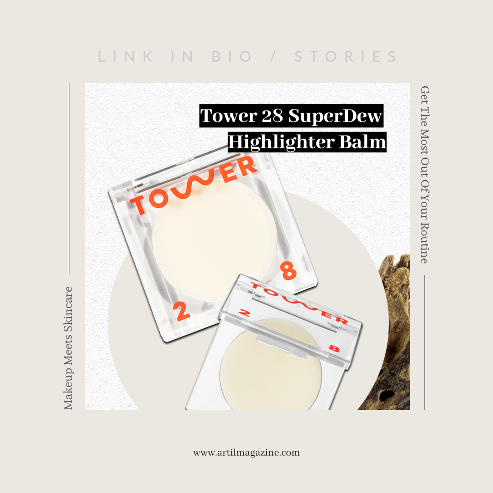
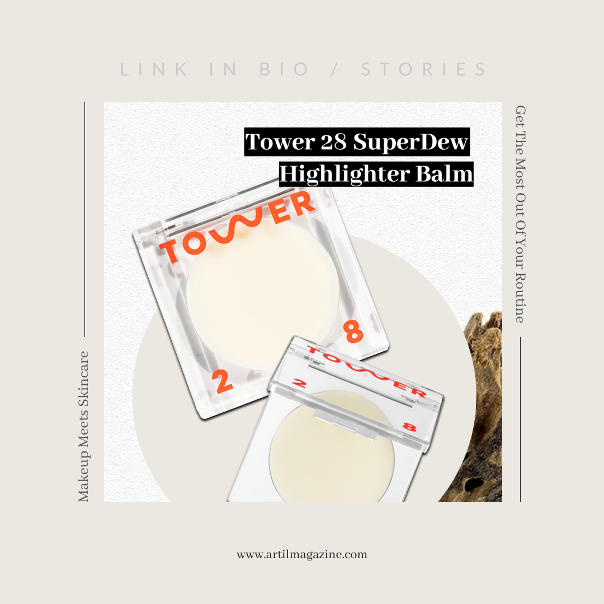

HUSKØBET
INTERNSHIP PROJECT / UI/UX / DASHBOARD
Buying a house, renovating or building can be quiet complex. Each time it's associated with a large investment and many considerations that sometimes require expert's help. Lots of documentation, going back and forth from one office to another adds extra complexity to the whole process. Together with Huskøbet, we built a solution for that problem: user's dashboard that enables members to easily get professional help within law, finances, insurance or construction to make the house journey smooth and even enjoyable.


Problem
How through digital solution can I help Huskøbet’s members handle the house journey and improve experience with processing the services?
Huskøbet is a member club, which provides its members with network of independent advisors, knowledge universe and services that helps in house buying, renovating or building. But being a member club, the company doesn't have a reliable place for its members. The place where they can keep their data, upload necessary documents and get help from advisors and experts from the field. House journey is a complex process, paper work, lots of spent money and worries. Many users struggle with vocabulary of the house buying industry and need a tool which helps them gather everything in one place.
Solution
We can all agree that one of the best solutions for displaying and organising information, tracking the data and providing the user with clear and easy to digest overview of information is dashboard. That was my plan for this project: to design an easy-to-navigate dashboard that is user-friendly, functional and nice-looking tool for Huskøbet's members.
PROCESS
I divided my work into three main stages:
•research and analysis which involves interviewing the stakeholders, business analysis and defining the target audience, understanding their behaviors by empathy map and mapping user's experience with user journey,
•design where I run competitive analysis, defined the style for my solution, wireframed my ideas and then prototyped the mock-ups, as my next stage was...
•...usability testing that I run using clickable prototype to reveal any pitfalls and ensure that the product is easily accessible and can help reduce users' pains and fulfil their needs.

DESIGN REVIEW
Communicating the values through visuals
Huskøbet has developed it's visual identity through digital platforms, like website, social media or advertising. The company uses its recognisable blue color scheme, which triggers feeling like loyalty, trust, knowledge, seriousness and stability. I aimed to trigger the same feeling through my solution, playing with colors, soft shadows and rounded corners. Applying design principles, like proximity, symmetry or similarity I wanted to make the design more aesthetically pleasing and better communicate the values through visuals.
IDEATION
A safe family life, requires the right housing choices
Buying, building or renovating a house was never easy. Even when we constantly developing and technology provides us with the latest improvements, there are still areas that we can handle overselves. My goal was to come up with a intuitive, user-friendly and modern tool that with its simple intercase, functionalities and good-looking design can help the Huskøbet 's members handle any house issue and take them closer to the HOME of their dreams.

HOW IT WORKS
From a booked service to the open case
Having registered to the member club, user has now access to his personal dashboard. From now on he has access to his cases, benefits of the member club and personal data. But wait, could you explain what are the 'cases'?
The user starts his house journey by booking a service from variety of choices. When he makes 'an order' he is directly taken to the dashboard when the 'new case' starts. In the new case user works with the assigned advisor on the chosen service that could be a sketch drawing with architect or ownership insurance with bank advisor.
Think of it as a web-shop. You go to the services list (product page), make an order ('buy' a product) and go to the basket (dashboard).
MOBILE RESPONSIVE
Mobile responsive isn't an option anymore. As these small devices constantly assist us in our daily lives it essential to design a mobile-friendly interface. 70% of Huskobet's users are active phone users so it was crucial to have the solution responsive for smaller screen sizes.

FINAL THOUGHTS
Learning by doing
Beginnings are always hard because we see the huge amount of work it takes to finish. And when we finally start, the reality kicks in. Lots of brainstormings, rethinking, fighting with your own thoughts, not being sure if what you're doing goes in the right direction. We suddenly realise what a milestone it is to finish what we've already started. But in the end, reaching the last pages it's a blissful moment full of pride and fulfilment.
I have to say that until now it was the biggest individual project I've ever taken on my shoulders. Adding a short period of time and a big scope of the project, I can truly admit that I gained lots of experience, knowledge and skills that help me develop as a young multimedia designer.


 
